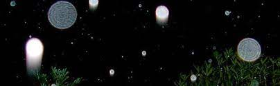

Ultras
Também chamados de “ultras”, são seres energéticos que pensam, sentem, agem e interagem conosco. Se apresentam na 3° dimensão com forma redonda, como uma bola e na 4° dimensão assumem uma forma achatada com o interior espiralado, como um discoide.
Os ultras são constituídos por 100% de energia, são seres de alta vibração, de luz intensa e não físico, vibram além da matéria. Se apresentam em diferentes tamanhos, são bolas transparentes e coloridas que possuem um núcleo de onde é emitido luzes de cores diferentes de acordo com a mensagem que desejam passar. Eles atuam no nosso campo eletromagnético, passam informações para seres de outras dimensões e para nós também, estão sempre nos inspirando e ajudando, mesmo que de forma imperceptível nossa evolução e nossas missões.
Estes seres estão por toda a parte, é possível fotografá-los usando uma câmera digital com flash por causa da luz infravermelha delas, apresentam diferentes cores de acordo com a energia e vibração do ambiente e das pessoa.
Atuam no nosso campo eletromagnético e costumam levar informações para os outros seres. Eles aumentam e diminuem de tamanho, dependendo da vibração. As luzes eles acendem com algum objetivo.
Como se Apresentam nas Diversas Dimensões:
(voltar)Entre 3a e 4a dimensão se apresentam em forma de bolas de luz transparente, redondo, por ser a forma mais perfeita energeticamente para a terceira dimensão. São como bolas de sabão coloridas.
Entre 4a e 5a dimensão são achatados/espiralados como se fossem dois pratos opostos colados um no outro parecendo um disco voador. A forma discóide é a mais adequada para tal dimensão. A sua forma achatada com o seu interior espiralado, é a mais perfeita para que a energia incida em seu interior e também, porque ela “molda” a forma em espiral da galáxia.
Entre 5a e 6a dimensão na forma de losango.
Entre 6a e 7a dimensão são elipsoidais.
O “Ultra” é um “ser” que não depende em nada da vibração do ser humano. A sua presença não depende da sintonia, do nível de energia e da harmonização do individuo. O “Ultra” pode desaparecer ou aparecer instantaneamente e quando acontece um "flash" de luz acompanhado de um estalo, significa que neste momento, com a sua presença, está tendo uma interação com a quarta dimensão. Na sua presença pode-se também sentir calor e sensação de vácuo.
Significado das Suas Cores:
(voltar)- Vermelho: são os vigilantes, observadores;
- Dourado: são os de comunicação e contato;
- Azul: equilibram a nossa frequência;
- Violeta: alquimia transmutativa (interação com a matéria);
- Verde: Trabalham a cura;
- Lilás: equilíbrio financeiro.
Contato:
(voltar)Para se ter contato com estes seres é necessário ter um padrão vibracional totalmente compatível com o deles.
No início, a humanidade vivia em sintonia com esta energia sutil, mas com o passar dos milênios tornou-se materialista, perdendo esta sintonia energética, e mental, baixando assim, o padrão vibracional de cada um. Quando a pessoa estiver com uma determinada “intimidade vibracional” com o “Ultra”, ele poderá enxergar a sua luz em função desta sintonia/interação. Nesse momento verá que ele não é físico como os seres humanos, que não é tridimensionalmente denso, porque ele vibra em um plano muito mais sutil do que o da terceira dimensão.
Por um processo ectoplasma/eletromagnético, por um momento, a pessoa pode tocá-lo se desenvolver pelo tato a sua percepção de um campo eletromagnético. E é quase certo também, que ele perceberá o campo energético gerado pelo "Ultra", já que esta vibração eletromagnética é a que mais aproxima da vibração dele. Para conseguir enxergar esses seres é necessário interagir com outras dimensões, para isso precisamos ativar a terceira visão, o que pode ser obtido com treinamento e exercícios.
Harmonia, e equilíbrio são fundamentais. Treinar para ver a aura é fundamental, assim treinamos nossa terceira visão. Primeiro, é necessário que a pessoa comece a visualizar sua aura e posteriormente a aura de algum colega. A melhor maneira para isso é ficar na frente de um espelho na penumbra, olhar uns 10 centímetros ao lado da cabeça e desfocar o olhar. Também pode ser tentado em matas, parques e jardins, olhando-se para as árvores ou copas das árvores, desfocando-se o olhar. Com calma e treinamento a pessoa começará a ver a primeira camada da aura, normalmente na cor prata ou verde néon. Essa aura tem mais ou menos um contorno de uns 10 centímetros ou menos ao redor do corpo. Treinando mais, a pessoa passará a ver as cores da aura interna.
O exercício pode ser feito com outra pessoa, também na penumbra. A primeira pessoa fica de costas para uma parede branca enquanto que a segunda tenta visualizar as cores da aura da primeira. Outro exercício que auxilia na ativação da terceira visão consiste em apertar levemente os olhos fechados com dois dedos, porém antes disso é interessante fazer uma ativação como pular por um minuto. Em seguida, apertar suavemente os olhos fechados com os dois dedos. Primeiro a pessoa verá a descarga elétrica do cérebro com pequenas luzes coloridas. Com o passar dos segundos, a visão se estabiliza e é possível ativarmos a terceira visão. Com o passar do tempo a pessoa começa a visualizar o corpo e o núcleo do Ultra e em uma outra fase, passa a ver os Energéticos. Quando a pessoa menos esperar, verá um flash de luz. A partir desse momento a pessoa estará vendo os seres ultradimensionais que a acompanham ou que estão naquele ambiente.
Exercício para ativar a visão noturna
A comunicação com eles é muito peculiar, conversam com você, em português verbalizando ou através de "ligação direta", que não é canalização, você fala automaticamente as coisas como se você mesmo soubesse, é muito sutil, mas com o tempo a pessoa percebe a diferença. Eles estão presentes em nosso dia-a-dia. São eles que nos "inspiram" certas informações ou dicas. Você deve acreditar sempre na sua intuição.